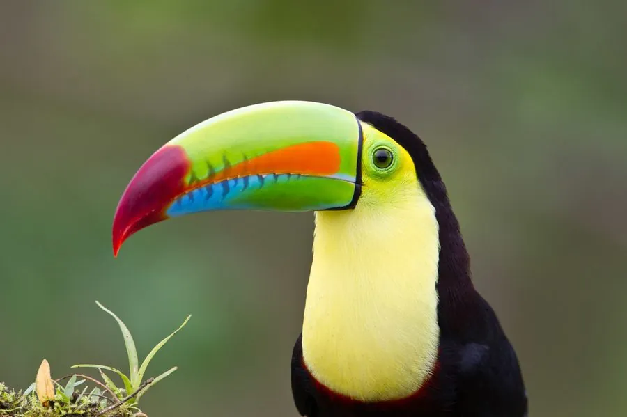

鸟类 · 动物界
彩虹巨嘴鸟 Ramphastos sulfuratus

中美洲雨林的标志性鸟类，黑色身体配鲜黄胸腹，巨喙呈现绿、橙、蓝、红多色。喙虽巨大却中空轻巧，用于展示和调节体温。
- 分类
- 门脊索动物门纲鸟纲目䴕形目科巨嘴鸟科属巨嘴鸟属
- 栖息环境
- 热带雨林、林缘、次生林、河岸林与咖啡种植园，偏好有高大结果树木的环境。
- 地理分布
- 墨西哥南部经中美洲至哥伦比亚、委内瑞拉北部；伯利兹国鸟。
- 保护级别
- IUCN 红色名录列为无危（LC）；列入 CITES 附录二，国际贸易受许可管理。
物种志
彩虹巨嘴鸟体长约四十二至五十五厘米，其中喙长可达十二至十五厘米，体重三百八十至五百克。通体黑色，胸部鲜黄色，腹部与尾下覆羽红色，眼周裸皮绿色。喙的色彩极为绚丽：上喙绿色带橙色侧缘，下喙橙蓝色，喙尖有黑斑，喙脊上有一条明显的棱线。虹膜暗褐，脚蓝色。雌雄外形相似，雄鸟喙略大。
它栖息于中美洲的热带雨林、林缘、次生林与咖啡种植园，常成小群在树冠层活动，取食果实、花蜜、昆虫、蜥蜴和鸟卵。巨喙内部中空、布满角质支架，重量很轻，主要用于求偶展示、恐吓竞争对手以及散热。进食时它会用喙尖夹起果实抛向空中，再仰头接住。繁殖期在树洞中营巢，每窝产卵二至四枚，雌雄共同孵化和育雏。彩虹巨嘴鸟分布于墨西哥南部至哥伦比亚和委内瑞拉，是伯利兹的国鸟，列入 CITES 附录二。
形态与习性
- 体长42–55 厘米
- 喙长12–15 厘米
- 体重380–500 克
- 食性果实、花蜜、昆虫、蜥蜴与鸟卵
- 繁殖树洞营巢，每窝 2–4 枚
- 保护级别IUCN 无危；CITES 附录二
趣味知识
- 巨喙内部中空，重量远小于外表看起来的样子。
- 喙面布满血管，可以帮助鸟体散热。
- 进食时把果实抛向空中再仰头接住。